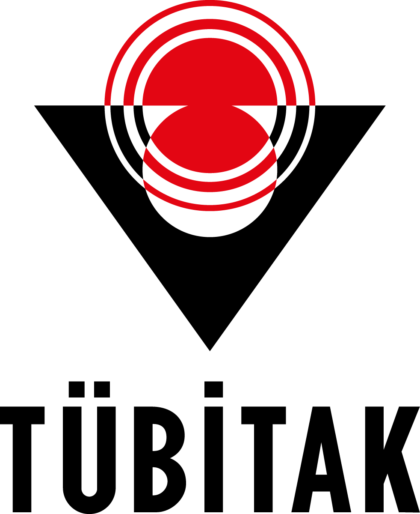

Osmanlı Son Dönem Sağlık Literatüründe Bir Eser ve Dört Farklı Tercümesi Üzerine Karşılaştırmalı Bir İnceleme
Osmanlı’nın son ve Cumhuriyet’in erken dönemine ait uzun ve sağlıklı yaşam literatüründe, birbirine yakın tarihlerde dört farklı çeviriye sahip olmasıyla dikkat çeken “Yüz Sene Yaşamak İçin” (Pour Vivre Cent Ans, 1913), dönemin tıp tarihini, bireysel ve toplumsal hıfzıssıhha (sağlık koruma) yaklaşımlarını anlamak açısından oldukça kıymetli bir kaynaktır. Fransız yazarlar Dr. Pascault ve Georges Moreau’ya ait olan bu esere dair, daha önce literatürde özet bilgiler içeren kısa bir makale dışında tatmin edici bir malumat mevcut değildi.
Bu proje; söz konusu tercüme eserlerin transkripsiyonunu yapmayı ve bu çeviriler üzerinden Pour Vivre Cent Ans’ın hem kültürel hem de bilimsel alımlanışını (resepsiyonunu) derinlemesine incelemeyi amaçlamaktadır.
Atatürk Kitaplığı ve TÜYEK Portal üzerinden çoklu baskılarına ulaşılarak metin yazımı ve transkripsiyonu gerçekleştirildi.
1914 tarihli “Muhafaza-i Hayat Yüz Sene Yaşamak Çaresi” isimli ilk tercümenin transkripsiyonu tamamlandı.
1916 tarihli tercüme transkribe edildi. Fransa Milli Kütüphanesinden (BnF) orijinal Fransızca kaynak metin temin edildi.
BİSAV Kütüphanesindeki nüsha üzerinden 1927 tarihli "Yüz Yıl Yaşamak İçin 22 Emr-i Sıhhiye" transkribe edildi. Ayrıca Harf Devrimi sonrası basılmış “Gençliği Koruma Çok Yaşama” eseri dijitalize edildi.
Proje verilerinin açık erişimli paylaşılacağı platformun son kontrolleri yapıldı.
Proje yürütücüsü ve danışman tarafından gerçekleştirilen latinizasyon, transkripsiyon ve nitel analizler sonucunda şu bulgulara ulaşılmıştır:
Tüm çevirileri içeren kapsamlı bir eser hazırlanmaktadır.
Mukayeseli analizleri içeren çalışma yayın sürecindedir.
Proje çıktılarına ve örnek sayfalara "Dijital Arşiv" sekmesinden ulaşabilirsiniz.
Proje Danışmanı
İstanbul Medeniyet Üniversitesi
Proje Yürütücüsü
Fatih Sultan Mehmet Vakıf Üniversitesi